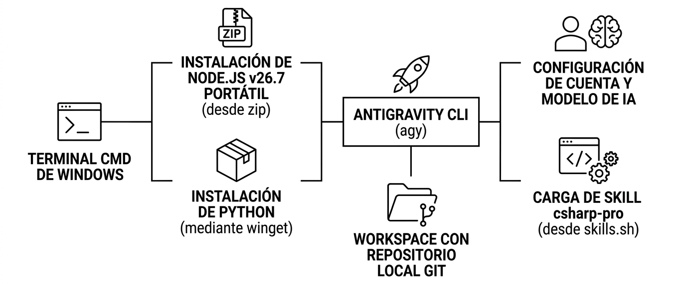
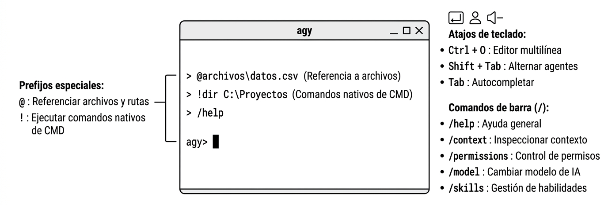
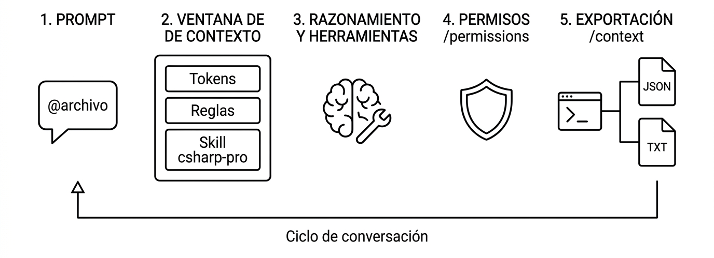

En el desarrollo de software actual, la interacción con modelos de lenguaje grande (LLMs) ha evolucionado desde interfaces gráficas basadas en chat hacia herramientas operativas en línea de comandos (CLI - Command-Line Interface). Las herramientas CLI permiten a los agentes de Inteligencia Artificial actuar directamente sobre el sistema de archivos, inspeccionar repositorios, compilar código y ejecutar pruebas automatizadas dentro del entorno real del desarrollador.
Antigravity CLI (agy) es la herramienta de terminal oficial de la plataforma de desarrollo agéntico de Google. Ofrece una interfaz de texto enriquecida (TUI - Text User Interface), bajo consumo de recursos, integración nativa con repositorios Git y soporte para extensiones estandarizadas mediante el protocolo Agent Skills.

cmd.exe)? csharp-pro) directamente desde registros comunitarios como skills.sh.Para ejecutar Antigravity CLI de forma reproducible y autónoma, configuraremos un entorno compuesto por Node.js portátil, Python y Git. Todas las instrucciones se ejecutarán exclusivamente a través del Símbolo del sistema de Windows (cmd.exe).
En muchos entornos de aula o laboratorios de desarrollo es preferible evitar instaladores ejecutables .msi que modifiquen el registro de Windows de manera invasiva. En su lugar, utilizaremos la versión comprimida .zip oficial de Node.js, descargándola y desplegándola mediante herramientas nativas de la consola de Windows (curl y tar).
# 1. Crear el directorio destino para herramientas portátiles mkdir C:\herramientas\nodejs cd /d C:\herramientas\nodejs # 2. Descargar el archivo comprimido oficial de Node.js v26.7.0 curl -Lo node-v26.7.0-win-x64.zip https://nodejs.org/dist/v26.7.0/node-v26.7.0-win-x64.zip # 3. Descomprimir el contenido usando la herramienta tar integrada en Windows tar -xf node-v26.7.0-win-x64.zip # 4. Configurar la variable de entorno PATH temporalmente para la sesión actual set PATH=C:\herramientas\nodejs\node-v26.7.0-win-x64;%PATH% # 5. Configurar la variable PATH de manera permanente a nivel de usuario setx PATH "%PATH%;C:\herramientas\nodejs\node-v26.7.0-win-x64" # 6. Verificar la correcta instalación y versiones node -v # Salida esperada: v26.7.0 npm -v # Salida esperada: 11.x.x o superior
Buenas Prácticas con Variables de Entorno en CMD
El comando set modifica las variables únicamente para la ventana actual de cmd.exe. Por su parte, setx registra la variable de forma persistente en el perfil del usuario de Windows para futuras ventanas. Recuerda que las ventanas de CMD abiertas con anterioridad no heredarán los cambios de setx hasta que sean reiniciadas.
winget en CMD Python es un requisito habitual para la ejecución de herramientas auxiliares, scripts de scaffolding y validación de entornos agénticos. Utilizaremos el Administrador de Paquetes de Windows (Windows Package Manager / winget) para instalarlo de forma desatendida.
# 1. Buscar los paquetes oficiales de Python disponibles en el repositorio de winget winget search Python.Python # 2. Instalar la versión estable de Python de manera desatendida winget install --id Python.Python.3.12 --exact --source winget --accept-source-agreements --accept-package-agreements # 3. Tras reiniciar o refrescar la ventana de CMD, comprobar la versión de Python y pip python --version # Salida esperada: Python 3.12.x (o superior) pip --version # Salida esperada: pip 24.x.x desde ...
Asegurar Python en el PATH
Si al ejecutar python --version la consola indica que el comando no se reconoce, verifica que la ruta de instalación de Python (habitualmente %LOCALAPPDATA%\Programs\Python\Python312 o la ruta seleccionada por winget) se encuentre incluida en la variable de entorno PATH.
agy) Una vez que el entorno base (Node.js, npm y Python) se encuentra operativo, comprobamos la disponibilidad del binario de Antigravity CLI (agy):
# Descargar e instalar Antigravity CLI curl -fsSL https://antigravity.google/cli/install.cmd -o install.cmd && install.cmd && del install.cmd # Comprobar la presencia y ubicación del ejecutable agy where agy # Ejemplo de salida: C:\Users\alumno\AppData\Local\agy\bin\agy.exe # Consultar la versión y opciones generales agy --help
Antes de interactuar con el agente en la práctica, es fundamental asimilar cómo estructura Antigravity su espacio de trabajo, su interfaz de comandos y su ciclo de vida de ejecución.

Antigravity CLI opera siempre en el contexto de un Workspace (espacio de trabajo). Para que el agente funcione de forma coherente y segura:
.git. Desde esa raíz busca los archivos de directrices (AGENTS.md, GEMINI.md) y las carpetas de habilidades (.agents/skills/).git diff qué modificaciones exactas se han aplicado sobre el código antes de confirmarlas.El cerebro de Antigravity CLI es un modelo fundacional de IA. La CLI permite elegir qué modelo gobernará la sesión en función de la complejidad de la tarea:
La CLI permite cambiar de modelo en cualquier momento mediante el comando /model o fijarlo directamente al arrancar la sesión con el parámetro --model <nombre_modelo>.
skills.sh Una Skill (habilidad) es un paquete modular de instrucciones, patrones de arquitectura, listas de verificación y herramientas que enseñan al agente cómo trabajar en una tecnología concreta.
skills.sh: Es el catálogo comunitario abierto de referencia para compartir habilidades de agentes de IA (soportado por herramientas como Antigravity, Cursor, Claude Code y OpenCode).csharp-pro: Diseñada por expertos en .NET, instruye al agente en el uso de sintaxis moderna de C#, principios SOLID, Clean Architecture, buenas prácticas con xUnit, patrones de Minimal API en .NET 10 y optimización de memoria mediante Span<T>.csharp-pro.Dentro de la sesión interactiva de Antigravity CLI, existen dos prefijos fundamentales para controlar el flujo de información sin consumir tokens innecesarios:
@: Referencia a Archivos y Símbolos Escribir el carácter @ abre un autocompletador difuso (fuzzy search) en tiempo real para seleccionar archivos o carpetas del workspace:
agy> @README.md Analiza el contenido inicial y propone una descripción técnica.
agy> @src/Program.cs Explica cómo se configura la inyección de dependencias.
agy> @.agents/skills/csharp-pro/SKILL.md Revisa las directrices de pruebas unitarias.
Beneficios técnicos:
@ crea una referencia indexada que el motor de Antigravity inyecta con precisión de líneas.!: Ejecución de Comandos Nativos en CMD Cuando una instrucción comienza con el signo de exclamación !, la CLI no envía el texto al modelo de lenguaje, sino que lo ejecuta directamente en el shell del sistema operativo (cmd.exe):
agy> !dir
agy> !git status
agy> !dotnet --version
agy> !node -v
Diferencia clave con la acción del agente:
!git status, la orden se ejecuta al instante en tu máquina sin coste de tokens ni latencia de red.run_command, solicitar tu confirmación de permisos y leer el resultado.La interfaz de texto de Antigravity CLI incorpora atajos de teclado clave para aumentar la productividad:
| Atajo | Acción | Descripción y Utilidad |
|---|---|---|
Shift + Tab |
Alternar Agente / Modo | Cambia entre agentes activos (ej. agente principal self vs. subagente research) o conmuta entre modo de edición y modo de planificación. |
Ctrl + O |
Editor Multilínea / Buffer | Abre un área de edición multilínea para redactar prompts estructurados extensos o inspeccionar el buffer completo de la transcripción. |
Tab |
Autocompletado | Completa nombres de archivos tras @, comandos tras / y sugerencias contextuales. |
Ctrl + C |
Cancelar Ejecución | Interrumpe inmediatamente la respuesta del modelo en curso o detiene una herramienta que tarde demasiado. |
Ctrl + D (x2) |
Salir de la CLI | Cierra la sesión interactiva de forma limpia y guarda el estado de la conversación. |
Flechas Arriba / Abajo |
Historial | Navega cronológicamente por los prompts anteriores introducidos en la sesión. |
Los comandos de barra son instrucciones operativas directas que permiten gestionar la sesión, el contexto, la seguridad y las herramientas sin pasar por el procesamiento del LLM.

A continuación se detalla el catálogo de comandos requeridos para esta actividad:
/help Muestra el manual de ayuda integrado en la consola, detallando la totalidad de comandos disponibles, parámetros admitidos y descripciones breves.
/btw (By The Way) Permite añadir una nota aclaratoria o contexto adicional al hilo de la conversación sin forzar al modelo a responder exhaustivamente a ella. Es muy útil para hacer correcciones sutiles al agente mientras resuelve una tarea en segundo plano.
/clear Limpia la pantalla de la terminal y reinicia el búfer visual del chat. No borra las reglas ni la memoria del proyecto, pero permite comenzar a redactar sin distracciones visuales acumuladas.
/resume Reanuda una sesión previa de conversación utilizando su identificador único (conversation ID). Permite retomar proyectos exactamente en el estado en que se dejaron en días anteriores.
/context Muestra una radiografía completa de la ventana de contexto actual: tokens consumidos frente al límite del modelo, archivos cargados en memoria, reglas activas y habilidades montadas. Es el comando central para verificar la salud de la sesión y generar la prueba de realización.
/permissions (Gestión y Revocación de Autorizaciones) Antigravity CLI implementa un modelo de seguridad por defecto donde cada acción crítica (ejecutar un comando en la consola o sobreescribir un archivo) requiere aprobación humana. Al aprobar una acción con la opción de recordarla durante toda la sesión, el usuario delega autonomía.
El comando /permissions permite inspeccionar todas las autorizaciones vigentes y eliminar / revocar autorizaciones de acción concedidas previamente, forzando al agente a volver a solicitar confirmación explícita ante cualquier operación en el sistema.
/model Abre un menú interactivo en tiempo real para conmutar el modelo de lenguaje de la sesión entre las opciones disponibles (Gemini 2.5 Pro, Gemini 2.5 Flash, Claude 3.7 Sonnet, etc.).
/skills Lista todas las habilidades (skills) descubiertas por el sistema, indicando si provienen del proyecto local (.agents/skills/), de la configuración global o de los módulos integrados por defecto.
/rewind Deshace el último turno de interacción o permite rebobinar a un punto histórico previo de la conversación. Es especialmente valioso si el agente ha seguido una línea de razonamiento errónea o ha generado código equivocado, permitiendo volver atrás sin perder el contexto inicial.
/usage Proporciona estadísticas cuantitativas del consumo de tokens durante la sesión: tokens de entrada (prompt), tokens de salida (completion), tokens servidos desde la caché contextual y cómputo acumulado de peticiones.
/browser Activa el subagente y las herramientas de navegación web automatizada (Puppeteer / Playwright integrado). Permite al agente abrir páginas web locales o remotas, tomar capturas de pantalla, inspeccionar el DOM y verificar el funcionamiento de aplicaciones web.
/antigravity-guide/browser Comando de espacio de nombres (namespaced skill command) que consulta directamente la guía técnica de referencia sobre automatización de navegadores de Antigravity (https://antigravity.google/docs/ide/browser), permitiendo al usuario obtener asistencia especializada sobre flujos de trabajo con el navegador.
A continuación, realizaremos la práctica completa guiada. Cada paso debe completarse estrictamente en el orden indicado, utilizando la consola cmd.exe.
Comenzaremos configurando las herramientas base en el símbolo del sistema de Windows (cmd.exe).
Abre una ventana de cmd.exe (puedes pulsar Win + R, escribir cmd y pulsar Enter).
Descarga y extrae la versión portátil de Node.js v26.7.0:
mkdir C:\herramientas\nodejs cd /d C:\herramientas\nodejs curl -Lo node-v26.7.0-win-x64.zip https://nodejs.org/dist/v26.7.0/node-v26.7.0-win-x64.zip tar -xf node-v26.7.0-win-x64.zip set PATH=C:\herramientas\nodejs\node-v26.7.0-win-x64;%PATH% node -v # Verificación: debe devolver v26.7.0
Instala Python usando winget y verifica la instalación:
winget install --id Python.Python.3.12 --exact --source winget --accept-source-agreements --accept-package-agreements python --version
Comprueba la disponibilidad de Antigravity CLI:
where agy agy --version
Instalación de Antigravity CLI
Si el comando where agy no localiza el binario, puedes instalar la CLI globalmente a través de npm ejecutando <pre class="salida_consola">npm install -g @google/antigravity-cli</pre> o verificando la ruta local proporcionada por el docente.
Crearemos la carpeta del proyecto que actuará como workspace de Antigravity y la vincularemos a un repositorio Git local. Para enriquecer el proyecto y dar contexto a la habilidad csharp-pro, inicializaremos además una aplicación de consola en .NET 10 (net10.0).
Crea y accede a la carpeta de trabajo:
mkdir D:\proyectos\proyecto-agy-balmis cd /d D:\proyectos\proyecto-agy-balmis
Inicializa el repositorio Git y configura la identidad local:
git init git config user.name "Alumno Balmis" git config user.email "alumno.balmis@alu.edu.gva.es"
Crea el proyecto base en .NET 10 para los ejercicios posteriores:
dotnet new console -n BalmisAgyApp -f net10.0 echo # Workspace Balmis con Antigravity CLI > README.md git add . git commit -m "feat: inicializacion de workspace git y proyecto base .NET 10"
Comprueba que el estado del árbol de trabajo de Git esté limpio:
git status # Salida esperada: nothing to commit, working tree clean
Iniciaremos la sesión de Antigravity CLI en la raíz de nuestro repositorio y seleccionaremos el modelo adecuado.
Desde D:\proyectos\proyecto-agy-balmis, arranca la CLI:
agy
Autenticación: En el primer arranque, la CLI solicitará iniciar sesión con tu cuenta de desarrollador de Google o suministrar una clave de API (API Key). Sigue las indicaciones que aparecen en pantalla para completar la autenticación.
Configuración del Modelo: Dentro del prompt de agy, pulsa /model:
agy> /model
Aparecerá un selector interactivo. Selecciona Gemini 2.5 Pro (o el modelo predeterminado de alto rendimiento asignado a tu cuenta).
Comprueba la configuración activa preguntando a la CLI:
agy> ¿Qué modelo estás utilizando y cuál es la raíz del workspace actual?
csharp-pro desde skills.sh Añadiremos al workspace la habilidad especializada en C# y .NET proveniente del catálogo skills.sh.
Puedes instalar la habilidad utilizando el gestor de paquetes de habilidades npx skills directamente desde la consola o integrando los archivos en la estructura .agents/skills/:
# Mediante el comando npx skills npx skills add https://github.com/rmyndharis/antigravity-skills --skill csharp-pro
Verifica que la carpeta contenga el archivo fundamental de la habilidad: .agents\skills\csharp-pro\SKILL.md.
Vuelve a la sesión de Antigravity CLI y consulta el estado de las habilidades con:
agy> /skills
Salida esperada:
Available Workspace Skills:
- csharp-pro (.agents/skills/csharp-pro/SKILL.md): C# and .NET enterprise patterns, clean code and performance guidelines.
Divulgación Progresiva en Acción
Observa que csharp-pro está registrada pero inactiva en la ventana de contexto. Solo ocupará memoria de tokens en el momento en que formules preguntas o tareas sobre archivos .cs o proyectos de C#.
@, !, Ctrl+O y Shift+Tab Practicaremos los controles de entrada y prefijos de terminal para comprobar su funcionamiento en tiempo real.
Uso de @: Pide al agente que analice el código generado en .NET 10 referenciando directamente el archivo Program.cs:
agy> @BalmisAgyApp/Program.cs Explica qué hace este código y qué versión de C# está utilizando.
Uso de !: Ejecuta una orden de compilación de .NET directamente desde el prompt sin pasar por el LLM:
agy> !dotnet build BalmisAgyApp/BalmisAgyApp.csproj # Salida por consola: Compilación correcta. 0 Errores. 0 Advertencias.
Uso de Ctrl+O: Pulsa la combinación de teclas Ctrl+O para abrir el editor multilínea. Escribe una instrucción en varios párrafos y pulsa Enter para enviarla:
[Modo Multilínea - Ctrl+O] Revisa el archivo @README.md. Añade una sección titulada 'Arquitectura del Proyecto' y documenta que utilizamos .NET 10 con Antigravity CLI.
Uso de Shift+Tab: Pulsa Shift+Tab para alternar entre el agente principal de código y el subagente de investigación (research) o cambiar de modo de ejecución.
Comprobaremos la funcionalidad de los comandos de barra requeridos para la supervisión y seguridad de la sesión.
Consulta de ayuda y métricas:
agy> /help agy> /usage
Revocación de Permisos con /permissions:
Ejecuta el comando para revisar las autorizaciones automáticas concedidas al agente:
agy> /permissions
Si habías marcado alguna acción para que el agente la ejecutara sin preguntar, selecciona la opción para revocar / eliminar todas las autorizaciones. A partir de este momento, cualquier modificación de archivos o ejecución de comandos volverá a pedir autorización expresa en pantalla.
Consulta de navegación y guía técnica:
agy> /browser agy> /antigravity-guide/browser
Nota al margen con /btw:
agy> /btw Recuerda que para la entrega debemos seguir el estándar del IES Doctor Balmis.
Como requisito indispensable de evaluación de esta actividad, cada estudiante debe generar y exportar una prueba de realización verificable extrayendo el estado del contexto de su sesión.
Dentro de la sesión de agy, ejecuta el comando /context para examinar el resumen de la ventana de contexto:
agy> /context
La consola mostrará una tabla con:
@ (README.md, Program.cs).csharp-pro).Exportar la prueba de contexto a disco:
Para exportar la prueba de realización, sal momentáneamente de la CLI interactiva (Ctrl+D o /exit) y ejecuta en cmd.exe una llamada que exporte el diagnóstico formal a un archivo llamado prueba_realizacion_contexto.json:
# Opción 1: Exportar el volcado de la sesión mediante agy en modo print agy --print "/context" > prueba_realizacion_contexto.json # Opción 2: Copiar el archivo de transcripción oficial generado por Antigravity # Ubicado en: %USERPROFILE%\.gemini\antigravity-cli\brain\\transcript.jsonl copy "%USERPROFILE%\.gemini\antigravity-cli\brain\*\transcript.jsonl" prueba_realizacion_contexto.json
Estructura que debe acreditar la prueba exportada:
Abre el archivo generado prueba_realizacion_contexto.json y comprueba que contenga los elementos que certifican la realización de la práctica:
D:\proyectos\proyecto-agy-balmis.Gemini 2.5 Pro).csharp-pro.!dotnet build y las referencias con @./permissions.Realiza un commit final en Git con la prueba de contexto incorporada:
git add prueba_realizacion_contexto.json git commit -m "docs: anadir prueba de contexto de realizacion de actividad1 agy" git log --oneline -n 3
| Comando | Sintaxis | Efecto y Propósito |
|---|---|---|
/help |
/help |
Muestra la ayuda general, manual de atajos y lista de comandos disponibles. |
/btw |
/btw <mensaje> |
Introduce un comentario o contexto lateral al asistente sin interrumpir el hilo principal. |
/clear |
/clear |
Limpia la pantalla de la terminal y reinicia el búfer visual del chat. |
/resume |
/resume <id> |
Reanuda una conversación previa utilizando su identificador único. |
/context |
/context |
Diagnostica el consumo de tokens, reglas cargadas, habilidades y archivos enlazados. |
/permissions |
/permissions |
Gestiona y permite revocar/eliminar autorizaciones previas concedidas al agente. |
/model |
/model |
Despliega el menú para alternar en caliente el modelo de lenguaje de la sesión. |
/skills |
/skills |
Lista las habilidades del workspace y globales disponibles para el agente. |
/rewind |
/rewind |
Rebobina la conversación al turno anterior descartando respuestas no deseadas. |
/usage |
/usage |
Muestra estadísticas detalladas del consumo de tokens y cuotas de la sesión. |
/browser |
/browser |
Activa el subagente de navegación web para pruebas de interfaz y scraping. |
/antigravity-guide/browser |
/antigravity-guide/browser |
Invoca la guía técnica oficial sobre automatización de navegadores de Antigravity. |
/clear o inicia una nueva sesión.@ en lugar de pegar código: Las referencias relativas ahorran tokens de entrada y permiten que el agente consulte el archivo directamente en disco.--dangerously-skip-permissions en entornos de producción. Revisa periódicamente con /permissions qué autorizaciones tienes activas..agents/skills/ del proyecto correspondiente.Resumen de la Actividad
Has aprendido a configurar un entorno de desarrollo asistido por IA completamente funcional y portátil utilizando Node.js v26.7, Python y Antigravity CLI en la consola cmd.exe de Windows. Has inicializado un workspace bajo control de versiones con Git, seleccionado modelos avanzados de IA, instalado la habilidad especializada csharp-pro desde skills.sh, dominado la sintaxis @ y !, operado con los atajos Ctrl+O y Shift+Tab, gestionado la seguridad con /permissions y exportado la prueba fehaciente de contexto como certificación de tu trabajo.